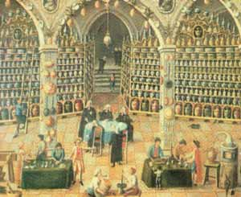
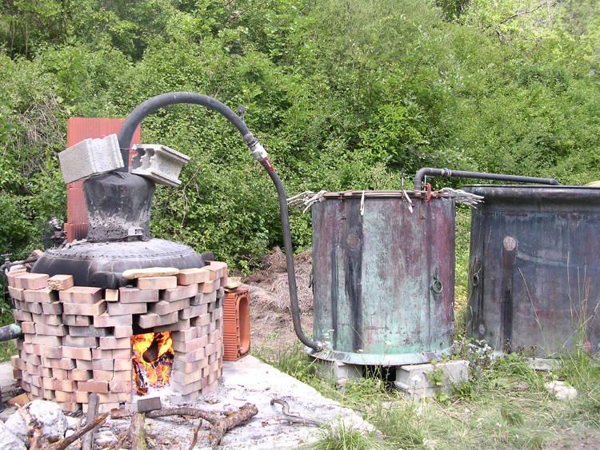

La salle de réception d’une pharmacie. Pendant de nombreuses années, les pharmaciens d’Europe ont analysé et enregistré les propriétés médicinales de beaucoup de nouvelles huiles essentielles.
L’aromathérapie est un domaine spécial de la phytothérapie (traitement par les plantes) qui se sert des substances aromatiques végétales, appelées huiles essentielles, dans un but médicinal.
Elle est une méthode de traitement vieille de plusieurs millénaires. Les vertus des huiles essentielles et des résines étaient déjà connues des Égyptiens, qui les utilisaient pour des rituels, pour traiter des maladies, pour les soins cosmétiques et pour l’embaumement.
Comme beaucoup de thérapies naturelles, l’aromathérapie connaît ces derniers temps une vraie renaissance.
L’extraction des substances aromatiques se fait surtout selon trois procédés : la distillation à la vapeur, l’expression à froid par simple pression mécanique et l’extraction au moyen de solvants organiques, lesquels sont ensuite éliminés par distillation sous vide. La quantité de plantes nécessaires (de quelques kilos à plusieurs tonnes pour certaines), son rendement, sa qualité, sa provenance définissent son prix. Par exemple, il faut 6 à 7 kilos de clous de girofle, ou 150 kilos de lavande vraie, ou 4 tonnes de pétales de roses de Damas, pour obtenir 1 litre d’huile essentielle.
Les huiles essentielles sont l’âme des plantes, et chacune possède sa propre identité, sa propre personnalité. Elles contiennent une grande concentration d’énergie vitale.
Leurs propriétés sont globalement :
Les huiles essentielles sont très rapidement absorbées par l’organisme, mais sont également très vite éliminées. Elles ont donc un effet rapide et de courte durée. Une utilisation à long terme est parfois déconseillée en raison des propriétés toxiques de certaines huiles.
Dans un but thérapeutique, elles sont utilisées de diverses manières :
Des critères de qualité sont indispensables et le mode de prescription est décisif pour une bonne efficacité de traitement.
